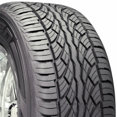
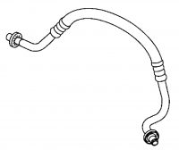
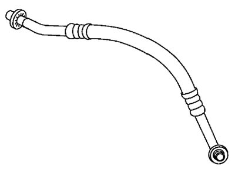

Falken Ziex S/TZ-04 - 305/40-22 - Set of Four for SRT Dodge Ram
$748.00
Price as of 2026-07-13 archive
Out of stock when archived
Contact to orderor email info@PartsRack.com · 360.837.3937
| Models | Ram |
|---|---|
| Category | SRT10 Ram Truck, Tires |
Description
*FREE SHIPPING ON TIRES INSIDE CONTINENTAL US & ALASKA*
Falken is dedicated to provide value in the ultra high performance category. Falken Tire's sustained commitment to advanced technological achievements, products and environmental consciousness makes Falken a great value.
The Ziex S/TZ-04 is designed for the light truck, truck, and SUV owner that demands outstanding performance, all-season capability, a smooth quiet ride, and control while carrying a load.
NOTE: These are "H" rated for speed, so if you plan on exceeding 130 MPH you should look at a different tire.
Treadwear: 460
Traction: A
Temperature: B
Speed Rating: H
Traction: A
Temperature: B
Speed Rating: H
These tires are in stock and will ship within 48 hours of order.
*FREE SHIPPING ON TIRES INSIDE CONTINENTAL US & ALASKA*
Archived 2025-09-07 · view original capture
More in SRT10 Ram Truck

2003 - 2006 Dodge Viper SRT10 Power Steering Pulley - 5290139AB
Part # 5290139AB
$242.00

2003 - 2006 Dodge Viper SRT10 Power Steering Quick Connect Fitting - 52088914AA
Part # 52088914AA
$75.00

Out of stock2004 - 2006 Dodge Ram SRT10 Oil Cooler Outlet Line - 05290410AB
Part # 05290410AB
$85.00

Out of stock2004 - 2006 Dodge Ram SRT10 Oil Cooler Inlet Line -05290411ab
Part # 05290411AB
$75.00